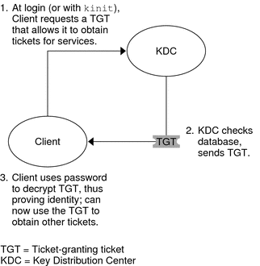
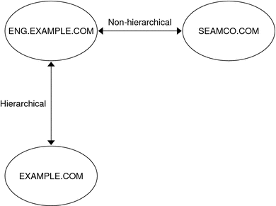

System Administration Guide: Security Services
|
|||
|
1. Security Services (Overview) Part II System, File, and Device Security 2. Managing Machine Security (Overview) 3. Controlling Access to Systems (Tasks) 4. Virus Scanning Service (Tasks) 5. Controlling Access to Devices (Tasks) 6. Using the Basic Audit Reporting Tool (Tasks) 7. Controlling Access to Files (Tasks) Part III Roles, Rights Profiles, and Privileges 8. Using Roles and Privileges (Overview) 9. Using Role-Based Access Control (Tasks) 10. Role-Based Access Control (Reference) Part IV Solaris Cryptographic Services 13. Solaris Cryptographic Framework (Overview) 14. Solaris Cryptographic Framework (Tasks) 15. Solaris Key Management Framework Part V Authentication Services and Secure Communication 16. Using Authentication Services (Tasks) 19. Using Solaris Secure Shell (Tasks) 20. Solaris Secure Shell (Reference) 21. Introduction to the Kerberos Service The Components of Various Kerberos Releases 22. Planning for the Kerberos Service 23. Configuring the Kerberos Service (Tasks) 24. Kerberos Error Messages and Troubleshooting 25. Administering Kerberos Principals and Policies (Tasks) 26. Using Kerberos Applications (Tasks) 27. The Kerberos Service (Reference) 28. Solaris Auditing (Overview) 29. Planning for Solaris Auditing 30. Managing Solaris Auditing (Tasks) |
How the Kerberos Service WorksThe following is an overview of the Kerberos authentication system. For a more detailed description, see How the Kerberos Authentication System Works. From the user's standpoint, the Kerberos service is mostly invisible after the Kerberos session has been started. Commands such as rsh or ftp work about the same. Initializing a Kerberos session often involves no more than logging in and providing a Kerberos password. The Kerberos system revolves around the concept of a ticket. A ticket is a set of electronic information that identifies a user or a service such as the NFS service. Just as your driver's license identifies you and indicates what driving privileges you have, so a ticket identifies you and your network access privileges. When you perform a Kerberos-based transaction (for example, if you remote log in to another machine), you transparently send a request for a ticket to a Key Distribution Center, or KDC. The KDC accesses a database to authenticate your identity and returns a ticket that grants you permission to access the other machine. “Transparently” means that you do not need to explicitly request a ticket. The request happens as part of the rlogin command. Because only an authenticated client can get a ticket for a specific service, another client cannot use rlogin under an assumed identity. Tickets have certain attributes associated with them. For example, a ticket can be forwardable, which means that it can be used on another machine without a new authentication process. A ticket can also be postdated, which means that it is not valid until a specified time. How tickets can be used, for example, to specify which users are allowed to obtain which types of ticket, is set by policies. Policies are determined when the Kerberos service is installed or administered. Note - You will frequently see the terms credential and ticket. In the greater Kerberos world, they are often used interchangeably. Technically, however, a credential is a ticket plus the session key for that session. This difference is explained in more detail in Gaining Access to a Service Using Kerberos. The following sections further explain the Kerberos authentication process. Initial Authentication: the Ticket-Granting TicketKerberos authentication has two phases: an initial authentication that allows for all subsequent authentications, and the subsequent authentications themselves. The following figure shows how the initial authentication takes place. Figure 21-1 Initial Authentication for a Kerberos Session
Subsequent Kerberos AuthenticationsAfter the client has received the initial authentication, each subsequent authentication follows the pattern that is shown in the following figure. Figure 21-2 Obtaining Access to a Service Using Kerberos Authentication
These steps make it appear that the server doesn't ever communicate with the KDC. The server does, though; it registers itself with the KDC, just as the first client does. For simplicity's sake, that part has been left out. The Kerberos Remote ApplicationsThe Kerberos-based (or “Kerberized”) commands that a user such as joe can use are the following:
These applications are the same as the Solaris applications of the same name. However, they have been extended to use Kerberos principals to authenticate transactions, thereby providing Kerberos-based security. See Kerberos Principals for information on principals. These commands are discussed further in Kerberos User Commands. Kerberos PrincipalsA client in the Kerberos service is identified by its principal. A principal is a unique identity to which the KDC can assign tickets. A principal can be a user, such as joe, or a service, such as nfs or telnet. By convention, a principal name is divided into three components: the primary, the instance, and the realm. A typical Kerberos principal would be, for example, joe/admin@ENG.EXAMPLE.COM. In this example:
The following are all valid principal names:
Kerberos RealmsA realm is a logical network, similar to a domain, that defines a group of systems under the same master KDC. Figure 21-3 shows how realms can relate to one another. Some realms are hierarchical, where one realm is a superset of the other realm. Otherwise, the realms are nonhierarchical (or “direct”) and the mapping between the two realms must be defined. A feature of the Kerberos service is that it permits authentication across realms. Each realm only needs to have a principal entry for the other realm in its KDC. This Kerberos feature is called cross-realm authentication. Figure 21-3 Kerberos RealmsKerberos ServersEach realm must include a server that maintains the master copy of the principal database. This server is called the master KDC server. Additionally, each realm should contain at least one slave KDC server, which contains duplicate copies of the principal database. Both the master KDC server and the slave KDC server create tickets that are used to establish authentication. The realm can also include a Kerberos application server. This server provides access to Kerberized services (such as ftp, telnet, rsh and NFS). If you have installed SEAM 1.0 or 1.0.1, the realm might include a Kerberos network application server, but this software was not included with these releases. The following figure shows what a hypothetical realm might contain. Figure 21-4 A Typical Kerberos Realm
|
||
|